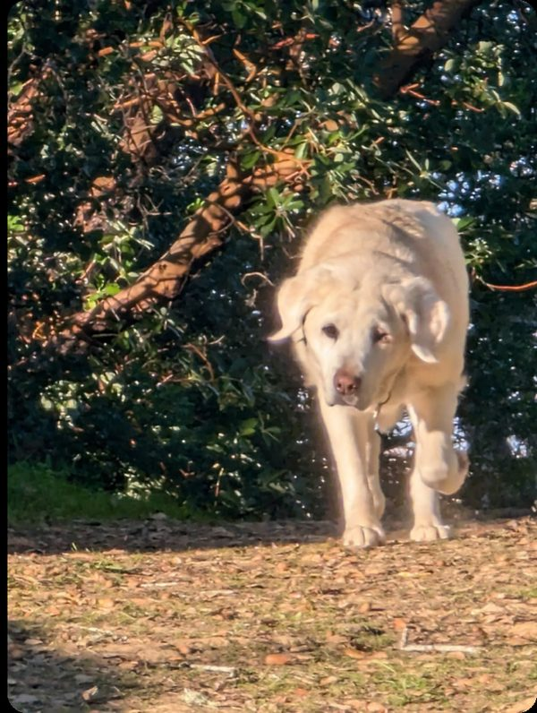

The Great Pizza Heist

"One who is prepared and waits for the unprepared will be victorious" —Sun Tzu.
It must have been these words that inspired Della to such smoke and mirrors. She knew the only thing that could get me to pull over would be the sound of her getting very sick and throwing up. Naturally I was worried — who wouldn't have pulled over to check on her? But she knew this would only get me out of the car and to open the back door. Where I saw that old recorder play back machine like the one in Home Alone coming to a stop after one final recorded *hack*. She's tried things like this before so I went back to the front seat thinking I would find her trying to put it in drive.
This she also planned for. As a life-size plushie greeted me when I opened the driver's side door. I put my head up to look around as she clearly wasn't in the car.
This she also planned for, as just then a young man in a pizza delivery uniform had gotten out of his car to deliver the round perfection of flavor that Della loves so dearly. I began to rush across the street towards the young man waving my arms screaming "we've been tricked" but I was stopped. By something Della had also planned for.
A second delivery man was leaving the unassuming home puzzled with a face I have seen only once before in my life. The face of a man who had just been told "we didn't order anything." Gathering the three of us in the front yard of a stranger's home was her goal. And the reward had just been loaded into the trunk of my car by the quiet accomplice Oban.
This she had also planned for, because a trunk full of pizzas split between two dogs just wasn't something to make this worth it. Della needed it all. Which is why she pulled out as soon as she heard that trunk snap close.
Poor Oban. He had no idea he was the first person she tricked today.